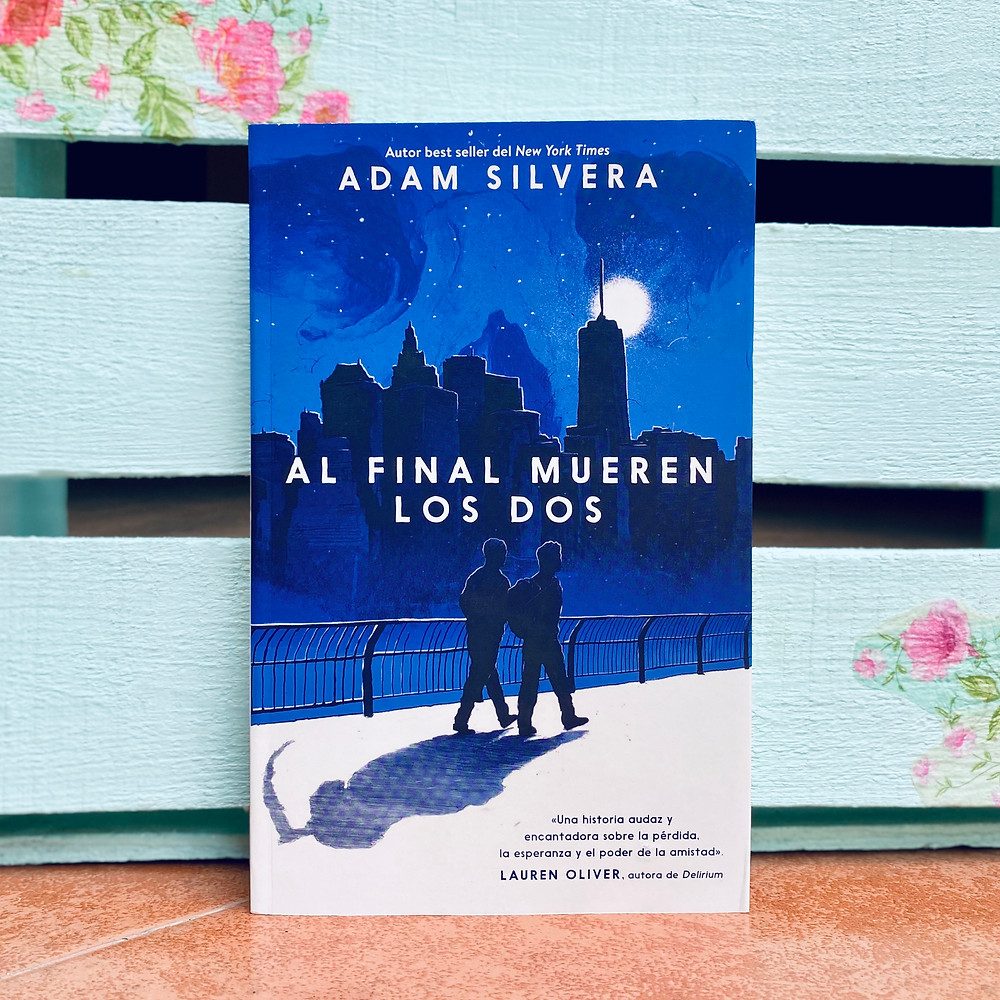

AL FINAL MUEREN LOS DOS - ADAM SILVERA

Al final mueren los dos sigue la historia de dos chicos que no se conocen de nada, Mateo Torrez y Rufus Emeterio, y que viven en un presente alternativo donde es posible predecir la muerte de una persona con un plazo de 24 horas.
Tras recibir ambos la llamada de que morirán pronto, se unen a una aplicación que se dedica a juntar a personas que han recibido esta trágica noticia. Así se conocen y comienzan a realizar su última gran aventura: vivir toda una vida en un solo día.
El libro consiguió hacer historia al convertirse en la primera novela juvenil con personajes latinos queer en alcanzar el número uno en la lista de bestsellers del New York Times. Además, desde su publicación en 2017, consiguió tener aún más fama durante la pandemia gracias a TikTok donde muchos de sus usuarios reaccionaban al libro.